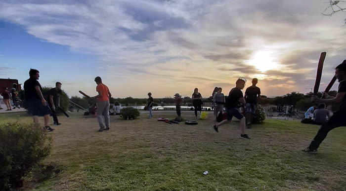
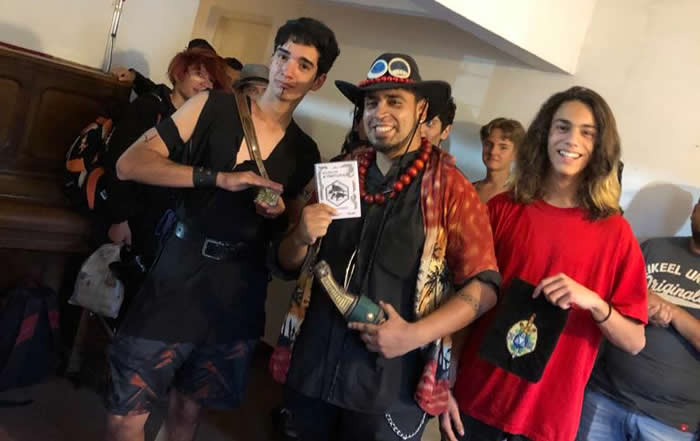

El juego de rol (RPG por sus siglas en inglés, Role-Playing Game) ha sido durante mucho tiempo una actividad apasionante y creativa para personas de todas las edades. Pero más allá del entretenimiento, el juego de rol ha demostrado ser una herramienta educativa poderosa, ayudando a desarrollar una serie de habilidades valiosas, desde la empatía hasta la resolución de problemas. En este artículo, exploraremos cómo el juego de rol puede transformar el proceso educativo y enriquecer las vidas de quienes participan en él.
El juego de rol sumerge a los jugadores en mundos imaginarios, donde tienen la libertad de crear personajes, desarrollar historias y resolver desafíos. Esta experiencia fomenta la creatividad y la imaginación de una manera que pocos otros medios pueden hacerlo. Los jugadores son alentados a inventar soluciones creativas para los problemas que enfrentan, lo que estimula su pensamiento innovador y su capacidad para pensar fuera de lo común.
Uno de los aspectos más destacados del juego de rol es su enfoque en la interacción social. Los jugadores deben colaborar, comunicarse y tomar decisiones juntos para avanzar en la historia. Esto promueve el trabajo en equipo y el desarrollo de habilidades sociales clave, como la comunicación efectiva y la resolución de conflictos. Además, el juego de rol fomenta la empatía, ya que los jugadores se ponen en el lugar de sus personajes y comprenden sus emociones y motivaciones.
 